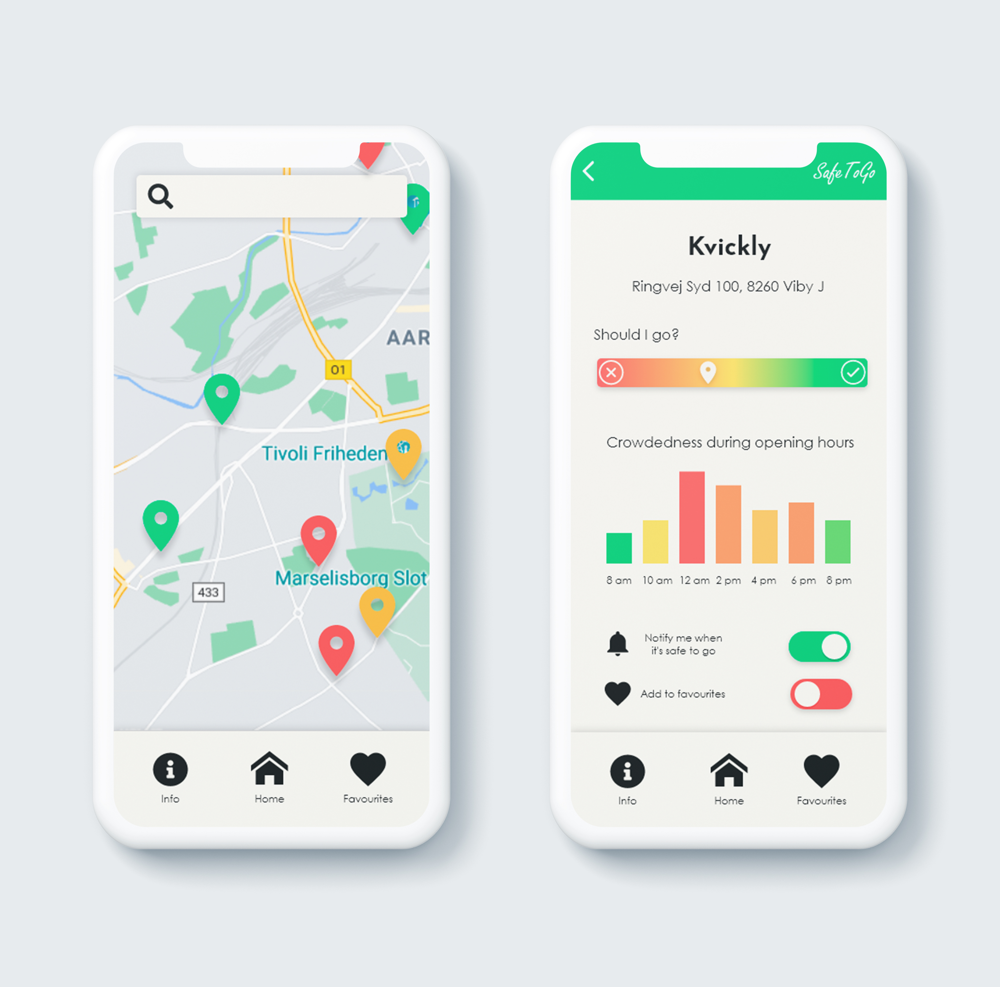
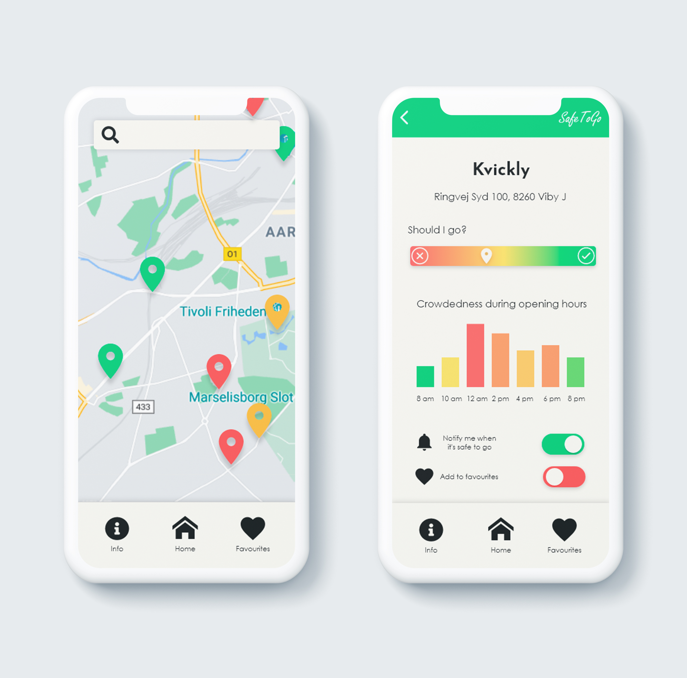

Concept
SafeToGo is an application developed in the wake of the coronavirus outbreak and its purpose is to help give people of high risk a safer experience in public spaces by spreading out the crowd and the goal is to contribute to minimizing the spread of the virus.
 

Project description
For our first 3rd semester exam project my group and I had to develop an
single page web application for any concept imaginable. Since the COVID-19 pandemic has become
embedded in every aspect of our day to day lives at the present moment, we found it especially
relevant to create a solution that would make our everyday easier.
The SafeToGo app displays live forecasts of various different public places and their crowd
density status with the use of intuitive colours. This gives the users a clear overview of where it
is crowded and where it is not. The functionality, design and the solution in its entirety is simple
and user-friendly which ensures that the app is accessible by everyone.